As you drag Widgets onto the design surface, or move/resize Widgets, you may find that a Widget is partially occluded by another one. You can hover the mouse over a partially occluded Widget to bring it to the front for easier editing.
As you drag Widgets onto the design surface, or move/resize Widgets, you may find that a Widget is partially occluded by another one. You can hover the mouse over a partially occluded Widget to bring it to the front for easier editing.
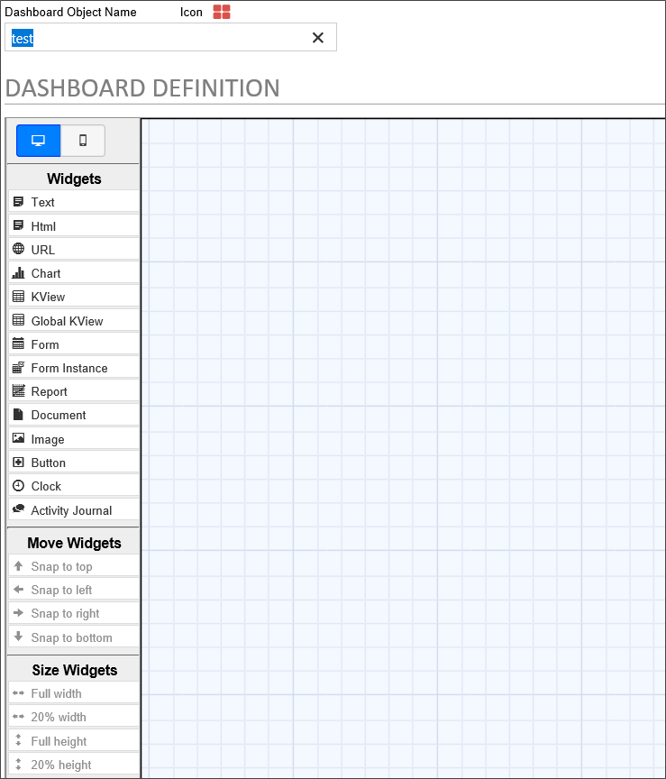
Users of Process Director v4.02 and higher have access to the Dashboard object. The Dashboard Object enables you to create a custom screen that displays existing Charts, KViews, Forms and other objects. The following objects may be displayed in a Dashboard:
Please refer to the Dashboard Widgets topic for detailed information about configuring the properties for each type of widget.
Using the Dashboard, designers can configure the number, size, and placement of the objects they wish to display, placing each object in a Widget. Objects can be placed in a dashboard asymmetrically as well. In addition, buttons can be placed in a dashboard to navigate to other dashboards, open Forms, display Knowledge Views, etc.
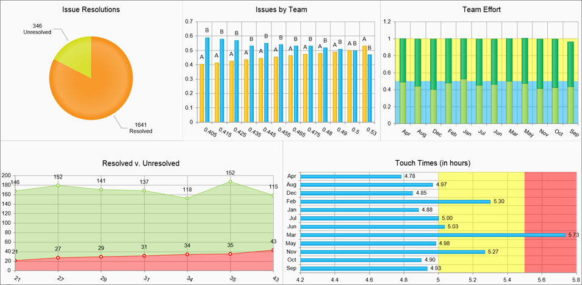
Clicking the Properties tab of the Dashboard definition will display the general settings for the dashboard.
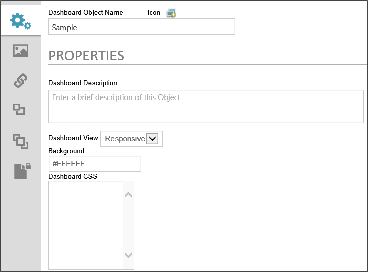
The icon that will be used for the dashboard. Clicking on the icon will open the Icon Chooser window, Selecting an icon from the dialog will set it as the Dashboard's icon.
The name that will appear in the Content List.
A brief description of the dashboard's purpose.
You have the option of viewing the dashboard in responsive format, which will make objects automatically resize to the size of the viewport, or in Fixed-Size format. If you choose the fixed-size format, you'll be presented with Height and Width input boxes that enable you to set the height and width, in pixels, of the dashboard object.
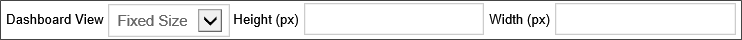
A named HTML or hexadecimal color that will display in the Dashboard's background.
A CSS stylesheet that you can create for the Dashboard. You can create named styles and apply those styles to other dashboard elements in the element's CSS Class property.
Objects are added to the Dashboard design space—which appears as a sheet of graph paper—by creating Widgets. The available Widgets are listed in the Widgets toolbar of the Dashboard Definition Tab.
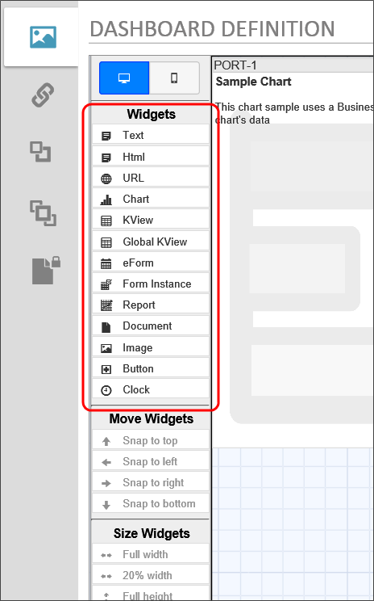
While some Widgets, like the Text or Button widgets, are configured via simple text configuration, most Widgets must contain an existing Process Director object. That is to say that you must first create the charts, Knowledge Views, Reports, etc. that you wish to display in the Dashboard prior to creating the Dashboard object. To create a Widget in the design space, simply drag the desired object type from the Widgets toolbar and drop it onto the design space. As you drag the Widget, a cursor the shows the type of Widget you are dragging will follow your mouse drag to the desired location in the design space.
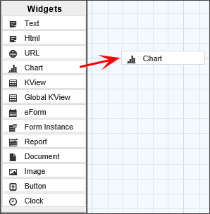
Once you release mouse button and drop Widget on the design space, the appropriate placeholder for the Widget will appear.
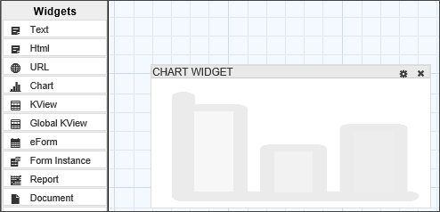
As you drag Widgets onto the design surface, or move/resize Widgets, you may find that a Widget is partially occluded by another one. You can hover the mouse over a partially occluded Widget to bring it to the front for easier editing.
Each Widget can be repositioned by using the title bar to drag and drop the Widget to a new location. Widgets can also be resized by dragging and dropping the right or bottom border of the Widget. The Widget's title bar displays the name of the Widget on the left side, and displays two icons on the left.
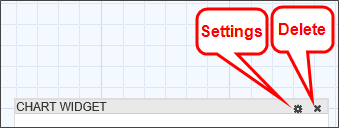
Clicking the Select Icon enables the Moving and Sizing options. Multiple Widgets can be selected at the same time, which enables the Align Widgets options.
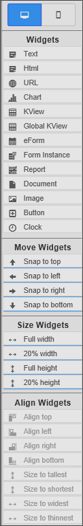
Clicking the title bar of a Widget selects it and highlights the Widget or deselects it if it has already been selected. Selecting a Widget activates the Move Widgets and Size Widgets options on the toolbar. Selecting multiple Widgets activates the Align Widgets options, which enable you to align and size multiple widgets.
The Move Widgets settings will automatically snap the selected Widget to the selected location on the design space. The Size Widgets settings will automatically resize the Widget to the selected size. The Align Widgets settings will snap the selected widgets to the specified alignment or size with respect to each other.
You can open the Widget Properties dialog box for a Widget by clicking the Settings icon.
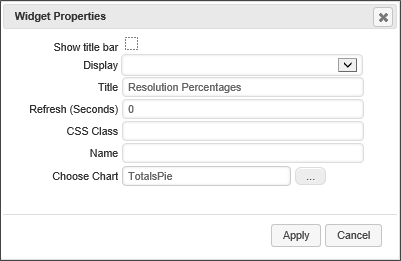
You can hide the title bar for a Widget by unchecking the Show title bar property.
The Display option enables you to select when you wish the widget to display. The available options are:
The text displayed in the title bar can be set by editing the Title property. (A default title is given to each Widget when it is created.)
You can set the widget to refresh its display regularly at the interval, in seconds, that you set in this property.
If you have a custom CSS stylesheet, you can specify the CSS class you'd like to use for the display of the widget.
An Name/ID you can set to refer to the widget in a script or other objects.
A Content Picker control enables you to select the Process Director object that is displayed in the Widget.
Once you have finished setting the Widget properties, you can save and close the Properties dialog box by clicking the Apply button. Clicking the Cancel button will discard your changes and close the dialog box.
All of the Widgets in the Dashboard will automatically resize themselves as the size of the dashboard window changes.
Process Director v5.42 and higher displays a Minimize/Maximize icon for Dashboard widgets that are configured to display the Header Bar.
You can launch a Form from a Dashboard object. Dashboard buttons can be used to launch Forms, and Knowledge views can be used to display Form instances. When a Form is launched from a dashboard objects, the Form will appear in an overlay on the Dashboard.
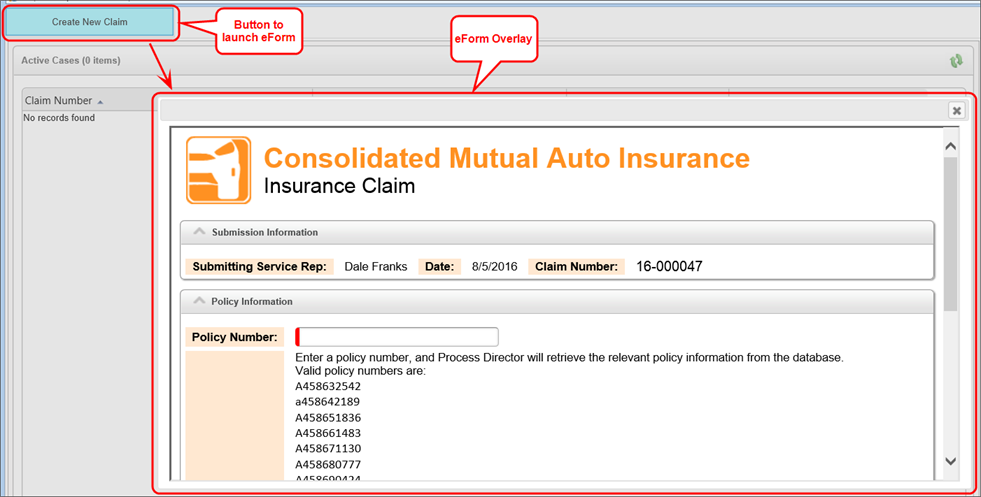
The Form that appears in the overlay is fully functional, and will operate just as it would if it were opened outside a dashboard.
When a Form instance is displayed in the Dashboard using the Form Instance widget, Process Director will automatically find the task for the Form Instance, if any, that is associated with the current user, and will display the form in task context, i.e., as if the Form was opened from the Task List.